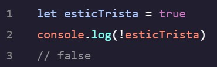
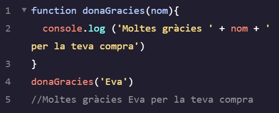
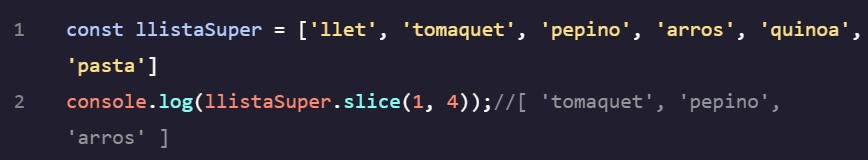

- La formula .toUpperCase() fa que s'imprimeixi tot amb majúscules:
- La formula .trim()serveix per treure espais innecessaris
- console.log(Math.random()) imprimeix un numero random entre 0 i 1 tenint en compte el 0 i tots els decimals.
- Si volguessim que només tinguès en compte els números sencers, hauriem d'aplicar la formula: Math.floor(Math.random()). per tant console.log(Math.floor(Math.random())) imprimeix o el 0 o el 1
- console.log(Math.floor(Math.random()*50)) imprimeix un número random sencer entre el 0 i el 50.
- console.log(Math.ceil()) serveix per imprimir un número decimal arrodonit.
- Number.isInteger() serveix per saber si un número es sencer o no.
- let és per indicar que és una variable es a dir es pot reasignar el valor
- const és per indicar una constant es a dir el seu valor no es pot reasignar
- Per poder crar una frase amb variables es fa de la següent manera console.log(`El meu nom és ${nom} i la meva ciutat és ${ciutat}`).per a fer-ho en comptes d'utilitzar cometes, s'han d'utilitzar accents oberts i els dos han de ser el mateix.
- typof () serveix per saber el tipu de variable que és: number, string o boorean

Hem de tenir en compte que quan volem crear una variable boorean no s'han de posar cometes abans ni despres de la paraula -true- o -false-.
- Els condicionals serveixen per fer que l'ordinador imprimeixi certs valors tenint en compte el resultats de les variables. Per fer-ho s'utilitza if ... else per a marcar les diferents opcions.
- Hem de saber els símbols que s'utilitzen i com utilitzar-los correctament:
- Quan volem que l'ordinador tingui en compte més de dues variables ho expressem d'aquesta manera:
Si canviessim la variable a let dia = 'Nit' el que es veuria imprès seria Sopar.
- Quan tenim moltes variables en comptes d'utilitzar la nomenclatura if...else utilitzem la nomenclatura switch.
Aquest mètode ha de tenir l'ultima opció amb el nom default.
- Per fer el text de if...else més curt podem utilitzar la següent formula per escriure-ho:

A la primera imatge podem veure que utilitzem les variables boolean per tal de reduir encara més el text però a la segona imatge podem veure que es pot utilitzar amb variables de frases també.
Els logical operators serveixen per a tenir en compte diferents valors sobre una mateixa variable.
- En els operadors and (&&) les dues condicions han d'evaluar true per a què imprimeixi l'opcio de Pots passar! si en canvi, una de les opcions no coincideix imprimirà l'altre.
- L'operador or (||) només ha d'avaluar una de les respostes com a true per a imprimir la resposta: Pots passar!.
- L'operador not o bang (!) reverteix el valor de la variable.
Una function declaration consta de:
~ La paraula que indica el que volem fer: function.
~ El nom de la funció o el identificador, seguit de parèntesis.
~ I el cos o body de la funció, que és tot el que va darrere de {}.
Hem de tenir en compte que es veuria escrit aixi: function identFuncio(), sense cap punt entre el nom i l'identificador
Per a que l'ordinador ens reconegui la funció i imprimeixi el resultat, haurem de citar-la primer escribint abans de la funció identFunció(). Com més vegades citem la funció, més vegades imprimirà el body d'aquesta.
Algunes funcions poden rebre imputs i utilitzar-les per relitzar alguna tasca
function calcularAreaRec(llargada, altura){llargada * altura}
L'imput que li estem donant és que calculi l'area d'un rectangle llargada i altura actuen com a dos variables normals, és a dir actuaran com a dos valors que es multiplicarán. Al actuar com a dos variables normals els hi haurem d'assignar un número a cada una:
calcularAreaRec(10,6)
En aquest cas les declararem així en comptes d'utilitzar la nomenclatura "let". Hem de tenir en compte que els valors que volem assignar a cada variable ha de coincidir en l'ordre que els posem. Per tant en aquest cas llargada = 10 i altura = 6. Aquesta manera de citar és el que se'n diu argument.
- Els parametres default serveixen per a indicar al ordinador què imprimir en cas que no es defineixi l'argument. S'escriuria de la següent manera:
function salutacio(nom='Desconegut'){console.log(`Hola, ${nom}!`)}
Podem veure que no ha calgut crear cap argument per nombrar els items. Però si definissim una de les variables es veuria així:
La primera variable ha canviat.
La funció return serveix per a varies accions:
- Retornar un valor: Pot processar dades (que poden ser proporcionades com a arguments/paràmetres) i desprès utilitzar el return per a que retorni el resultat.
- Finalitzar la funció: Quan una funció es troba una instrucció return para la seva execcució i surt de la funció. Significa que qualsevol codi després de la instrucció return no serà llegit.
- Emmagatzemar dades: El valor que retorna una funció pot ser emmagatzemat en una variable per un ús posterior.
La variable resultat pot ser guardada per un ús posterior.
Les utilitzem per dur a terme tasques específiques dins de tasques o funcions més grans, són útils per varies raons:
- Modularitat: al dividir tasques grans i complexes en varies tasques més específiques, el codi es torna modular i per tant més fàcil de llegir i de solucionar possibles errors.
- Facilita les proves: les funcions expecialitzades són més fàcils de posar a prova i comprobar que el codi estigui funcionant.
- Extracció: permeten extreure petits detalls de la funció principal i que la programadora només hagi de concentrar-se en la lògica principal sense preocupar-se massa dels detalls d'implementació.
Podem veure que la funció principal ha fet càlculs a través de la funció auxiliar.
És una altre manera de deifinir una funció. Per definir una funció dins d'una expressió, normalment es fa dins una variable, es veuria aixi:
const mevaFuncio = function (){
}
Per fer-la:
1. Declarar una cosntant amb el nom de la funció. En aquest cas calcularAreaRect i plantesNecAigua.
2. Assignar com a valor de la variable una funció anònima ( function ) seguida d'un conjunt de parèntesis amb possibles paràmetres i un conjunt de claus que contenen el cos de la funció. En aquest cas function (base,altura) {} / function (dia){}.
Podem veure que és molt més útil en el cas de calcular l'area del rectangle, ja que gràcies a l'expressió de funció ens estalviem repetir els calculs per a pròximes vegades.
- Es una manera més curta d'escriure una expressió de funció, es fa utilitzant la "fat arrow":
=> {}
evita que cada cop que fem una expressió de funció hagim d'escriure la paraula function. Per tant, tenint en compte l'exemple anterior, es veuria així:
const = calcularAreaRect = (base,altura) => {return base * altrua}
- Serveixen per a reduir encara més les funcions de fletxa. Les fucnions que tenen un sol paràmetre no els hi calen els parèntesis:
const num = 1 => {..}
En canvi si una funció no té paràmetre o en té més d'un, si que s'han de posar els parèntesis.
- Un cos de funció compost en una sola línea no necesita '{}' ja que l'acció return està implicita.
const suma = (a, b) => a + b
const plantesNecAigua = dia => 'dimecres' ? true : false
És fundamental per mantenir el codi ordenat, ja que les variables que estiguin dins el body del block {} només podràn ser modificades des del mateix block. Per tant evitarem que futures accions puguin actuar sobre aquesta variable i canviar-la.
Podem veure que imprimeix dos valors diferents per la mateixa variable, ja que un dels console.log()agafa el que està dins el block i l'altre no.
En el cas de fer una funció amb fat arrow, per tal de que s'imprimeixi el console.log() de dins la funció s'ha de call o citar, la funció: imprimeixFruita().
Per escriure el codi de manera correcte ho hem de fer així:
Podem veure que totes les variables están dins algun block i que per tant només actuen dins a aquest, fent així que el valor d'aquestes no es pugui modificar per error i per tant fer que el codi funcioni malament.
- És una estructura de dades que ens permet emmagatzemar múltiples valors en una sola variable. És una llista amb diferents valors, que poden ser: número, cadenes de text, objectes i altres arrays. Un array es deifneix amb [] i els seus elements es separen amb comes:
let fruites = ['maduixes','síndria','meló']
- L'estructura array té un índex intern del 0 al 3 i es pot citar cada element dins del array de la seguent manera:
- Utilitzant les array i el seu índex, podem canviar elements individuals de la variable en qüestió:
Es poden assignar variables cont i let a arrays. Els elements de les arrays let es poden modificar totalment, ja que la variable let es canviant. En canvi de les arry const només es poden modificar certs elements ja que la variable const no es modificable.
Podem veure que en la variable const es poden canviar alguns valors però no tots.
Serveix per saber quants elements hi ha en una array. S'escriu de la següent manera:
console.log(nomVariable.length)
Permet afegir items al final de l'array.
Elimina l'últim item de l'array
Uneix tots els items de la array en una sola string
S'utilitza per extreure una part de la array. Aquest mètode utilitza dos arguments, el primer és on vols iniciar el tall de l'array aquest valor es veurà inclòs en el nou array, i on vols acabar el tall. Aquest últim item no es veurà inclós en el nou array.
Canvia el contingut de l'array: eliminant, canviant o afegint elements.
En aquest codi podem veure com al .slplice(2,1 'broquil') li estem demanant amb el '2' que seleccioni el item 2 del array i amb el '1' que l'elimini i amb 'broquil', que l'item eliminat el substituïm per aquest nou item.
Elimina el primer item de l'array i el retorna, després si tornem a imprimir l'array original, el primer element no hi serà.
Afageix un o varis items al principi de l'array.
S'utilitza per combinar dos o més arrays.
Podem passar les arrays a funcions per a facilitar el codi i poder aplicar calculs i modificar les arrays a travès de les funcions.
Podem tenir arrays dins altres arrays. Per accedir a les arrays emmagatzemades dins d'una altre podem utilitzar l'índex d'aquestes per accedir als items:
Veiem que en la constant extreureNum citem el item [2] que seria el 3er item ja que l'index de les arrays començen per 0. I després citem l'item [1] que és el segon item de la array seleccionada anteriorment. És a dir amb la primera citació hem seleccionat l'array sobre la que volem actuar i amb la segona el item en si que volem aïllar.
Els loops ens permeten repetir un bloc de codi varies vegades sense haver-lo de tornar a escriure. L'estructura bàsica d'un loop "for" és:
1. Inici: Aquí s'estableix un punt de partida per al loop.
2. Condició: Aquesta és la prova que s'avalua abans de que s'executi el loop. És a dir si la prova resulta verídica el loop contínua, i si la prova resulta falsa el loop es para.
3. Iteració: Actualitza el valor després de cada cicle.
En aquest codi li estem demanant que faci un comptador del 0 al 10.
podem veure que el 0 és l'inici, és a dir el punt de partida. Li estem demanant que començi a comptar des de 0.
El comptador < 11 és la condició, ja que si no continuaria comptant fins l'infinit o donaria error.
I finalment el comptador ++ és el que fa que sumi a cada actualització.
Per a què un loop funcioni al revès, nomes hem de canviar certs elements. Per començar li hem de dir que inici el compte en 10 o en el número que volem que comenci. Al apartat de la condició li hem d'indicar en el número que volem que acabi i en l'apartat de la itració li hem de dir que resti ja que el que volem és que li tregui valors a 10 fins arribar a 0.
Els loops dins les arrays serveixen per a itinerar en els items d'aquesta. Sabem que les arrays emmagatzemen dades per tant en comptes de canviar o alterar aquestes dades utilitzem loops per organitzar-les o extreure un resultat determinat sense haver-ho de fer manual.
Desglossem l'exemple anterior:
- Tenim un array que es diu viatges amb noms de destins.
- Volem imprimir els destins però no volem fer un consol.log per a cada element per tant creem el bucle for.
- Dins el for creem l'inici del loop, que és let i = 0. Estem creant una variable i i assignant-li el valor 0. Aquesta variable actuarà com a índex que ens permetrà accedir a cada valor de la variable viatges.
- Seguim amb i < viatges.length aquí estem definint la condició per a que el loop s'executi. És a dir el bucle seguirà executant-se sempre i quan i sigui menor que la quantitat de items dins l'array, és a dir 3. Com que el valor de i és 0, començarà pel primer item de l'array.
- L'element i++ és l'actualització del loop. És a dir li estem indicant que desprès de cada repetició del loop li sumi 1 al valor i. Hem de tenir en compte que el loop s'executà un cop, després un altre i així fins que es compleixi la condició. Tot hi que nosaltres veiem escrit el resultat tot junt, ell ho executa un per un.
- Finalment tenim console.log(viatges[i]) que seria el cos del bucle.
És quan tenim un loop dins un altre loop. Pot servir per trobar elements o per classificar elements de diferents loops.
- En aquest exemple tenim dos llistes de seguidors, una per el Bob i l'altre per la Tina i volem trobar quins seguidors en comú tenen. L'última array seguidorsComuns = [] està buida ja que és on emmagatarem els seguidors comuns. La idea és comparar cada seguidor del Bob i cada seguidor de la Tina, i si es troba alguna coincidencia, enviar-ho a la llista de comuns.
- Per a fer-ho necessitem dos loops for, el loop extern és for (let i = 0; i < seguidorsBob.length; i++) {}. Aquest loop recorre la llista de seguidors del Bob.
- El loop intern és for (let j = 0; j < seguidorsTina.length; j++) {}. Aquest loop recorre la llista de seguidors de la Tina.
- La condició d'aquest cas és l'element if. Li estem demanant que si algun seguidor del Bob coincideix amb algun seguidor de la Tina, l'envii a la llista seguidorsComuns.
- Per entendre millor els loops while el compararem amb els loops for.
Desglossem el loop while:
- Abans d'iniciar el loop definim una variable comptadorDos i li donem el valor 1.
- La condició és while (comptadorDos < 4). És a dir mentre la condició es cumpleixi, el loop es seguirà executant.
- Dins el cos del while es troba el loop. Primer mostrem el valor real de la variable console.log(comptadorDos). I després incrementem el valor de comptadorDos amb comptadorDos ++.
L'utilitzem quan volem que el codi s'executi al menys una vegada i desprès que segueixi executant-se en base d'una condició. És a dir la declaració Do ... While indica que s'ha d'executar el loop fins que la condició no es compleixi. Quan la condició es compleix, el loop s'acaba.
Desglossem l'exemple anterior:
- Començem creant dues variables, una la variable principal, en aquest cas: let comptador = "" i la segona la variable auxiliar que és let i = 0. La primera variable la deixem sense valor ja que extreurem els valors del loop. La segona variable li donem el valor de 0 per què volem que el comptador començi en 0.
- En aquest pas ja començem amb la declaració do ... while, que serà el el cos del loop.
El break s'utilitza per trencar el loop abans de que finalitzi si es compleix certa condició.
En aquest cas, trenquem el loop quan trobem un seient lliure per què ja hem complert el nostre objectiu.
| Saturday | Sunday | |
|---|---|---|
| Morning | Work | Relax |
| Afternoon | ||
| Evening | Dinner |